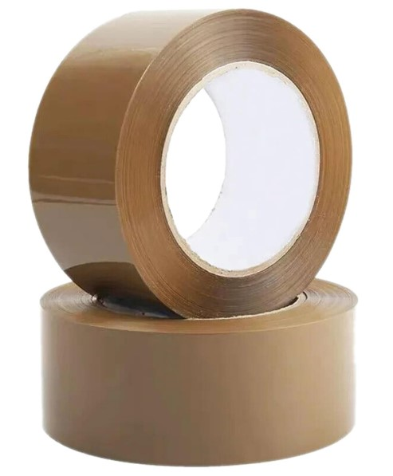
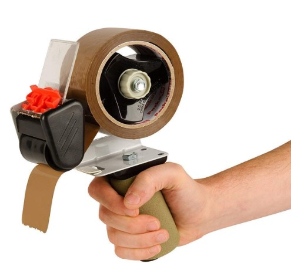
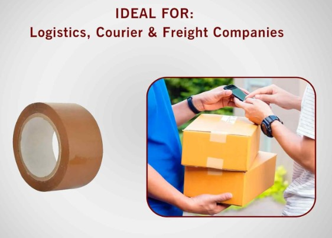
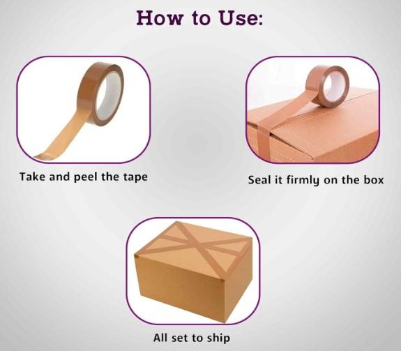
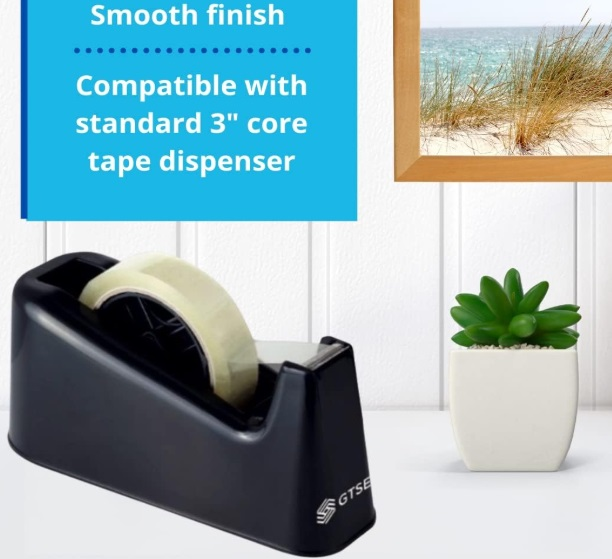
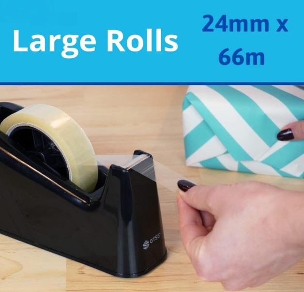
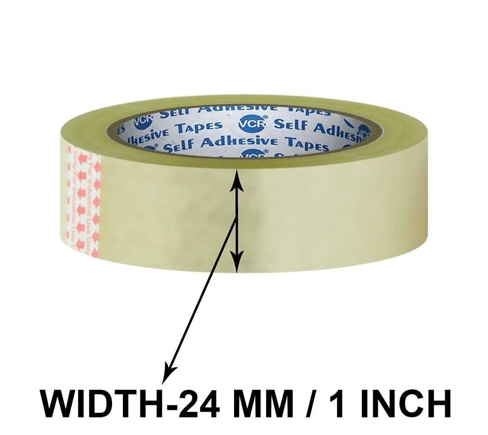
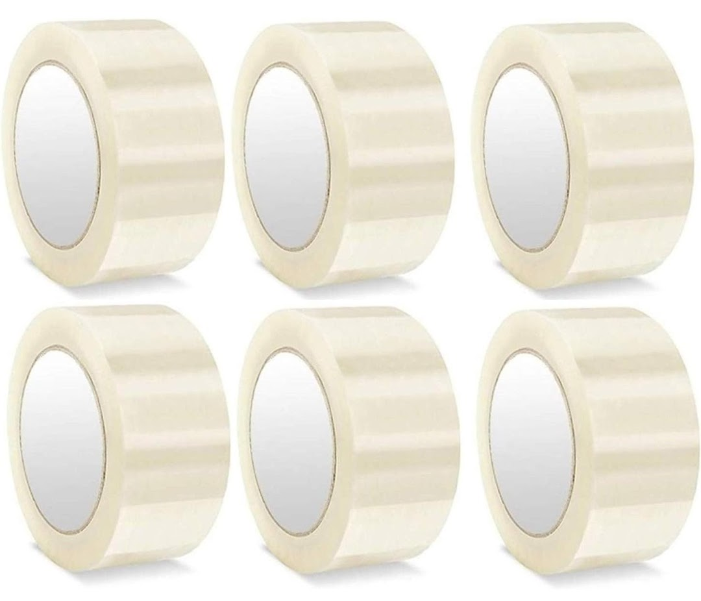
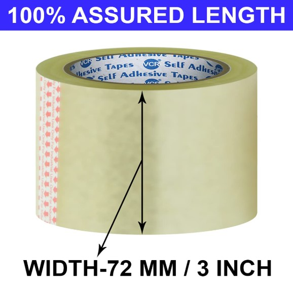

Product Overview
BOPP (Biaxially Oriented Polypropylene) Packing Tapes are widely used
for sealing cartons, boxes, and packages in logistics, warehousing,
manufacturing, and e-commerce operations. These tapes provide strong
adhesion, high tensile strength, and reliable performance.
Suitable for manual and machine applications, BOPP tapes ensure
secure sealing during storage and transportation while maintaining
cost efficiency and ease of use.
Key Features
- Strong adhesion on corrugated cartons and surfaces
- High tensile strength and tear resistance
- Smooth and quiet unwinding
- Suitable for manual and machine use
- Consistent performance in varied temperatures
Specifications
- Material: BOPP Film with Acrylic Adhesive
- Thickness: Available in multiple micron ranges
- Widths: 24 mm, 48 mm, 72 mm
- Standard Lengths: 65 m, 100 m, 150 m
- Colours: Transparent, Brown, White, Printed
- Application: Manual and automatic carton sealing
Applications & Use Cases
- Carton sealing and packaging
- Warehousing and logistics operations
- E-commerce order packaging
- Manufacturing and distribution units
- Shipping and storage applications
Best Suited For
- Manual carton sealing in warehouses and factories
- E-commerce and courier packaging
- Medium to heavy cartons used in Indian transport conditions
Selection Note
For Indian conditions, higher micron tapes are recommended for
heavy cartons, long-distance transport, and humid or dusty environments.
Machine rolls should be selected only if consistent volume packing is involved.
Commonly Used Along With
- Corrugated Boxes
- Stretch Films for pallet wrapping
- Manual Strapping Kits for load reinforcement
Product FAQs
-
Which micron thickness should be used for heavy cartons?
For heavy or long-distance shipments, higher micron BOPP tapes are recommended
to ensure strong adhesion and prevent carton opening during transit.
-
Are BOPP tapes suitable for Indian climate conditions?
Yes. Acrylic adhesive BOPP tapes perform reliably across temperature variations,
humidity, and dust commonly encountered in Indian logistics environments.
-
Can these tapes be used with automatic carton sealing machines?
Yes. Machine-grade BOPP tapes are suitable for automatic and semi-automatic
carton sealing machines when consistent packing volumes are involved.
-
Do BOPP tapes lose adhesion over time?
When stored properly and applied on clean surfaces, BOPP tapes retain adhesion
throughout storage and transportation cycles.
-
What width is recommended for standard cartons?
48 mm width is commonly used for standard cartons, while wider tapes
(72 mm) are preferred for heavier or oversized boxes.
-
Are printed BOPP tapes available for branding?
Yes. Printed BOPP tapes can be supplied for branding, identification,
and tamper-evidence in bulk orders.